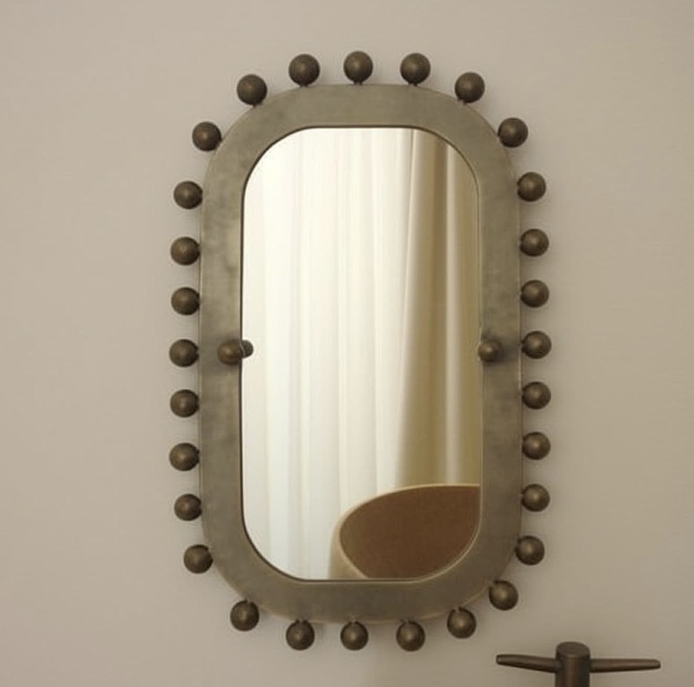

Estos espejos reinterpretan técnicas artesanales de vidrio mediante procesos contemporáneos. Studio Lares presenta sus piezas en ferias como Zona MACO, destacando el valor del trabajo manual en el diseño actual.